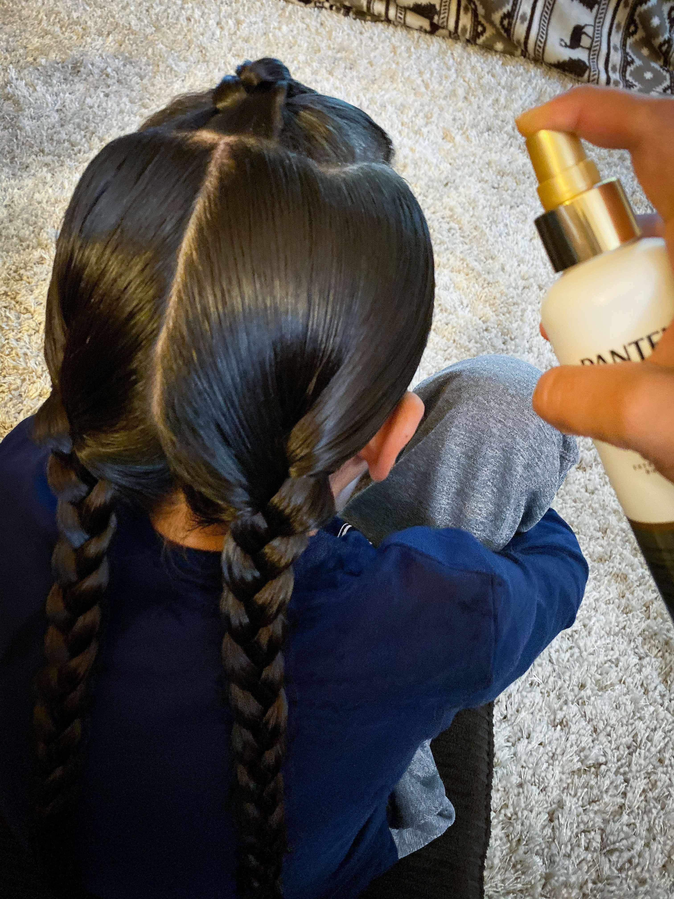

How to re-braid hair Indigenous Style
Materials Needed:
- Spray bottle with water
- hairspray
- comb
Directions:
- Start with the top braid if there is a top braid.
- Unravel the pre-existing braid all the way.
- Spray the hair with water before combing.
- Once the fly-aways are secured back into the hair, rebraid the hair.
- Repeat this process for the remaining braids.
- When all of the braids are re-braided, use hairspray to keep fly-aways down.
Spraying the hair with water
Back to Directions
Combing the hair out to get the fly-aways re-secured
Back to Directions
Rebraiding pre-existing braids
Back to Directions
Spray the hair with hairspray to secure the hair and fly-aways

Back to Directions